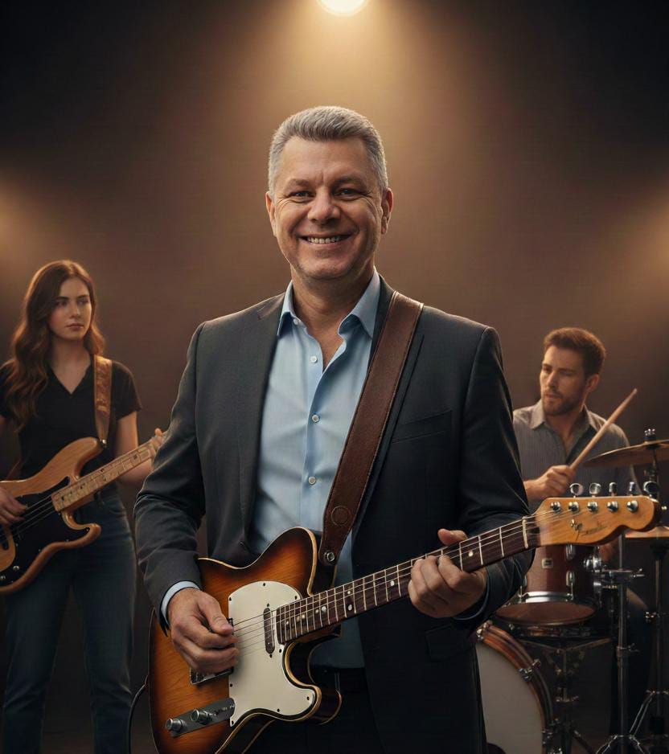

Fábio Lourenço de Aguiar Silva é natural de Teixeira de Freitas (BA) e carrega na música uma história que começa cedo, aos 10 anos, inspirado pelo violão de seu saudoso avô.
Entre os 17 e 25 anos, consolidou sua vivência musical participando ativamente de bandas e conjuntos gospel, desenvolvendo versatilidade ao tocar violão, bateria, baixo e guitarra.
Hoje, aos 50 anos, Fábio atua como professor de música, dedicando-se à formação de alunos tanto em aulas particulares quanto no contraturno de duas escolas cristãs em Criciúma (SC).
Sua missão vai além do ensino técnico: ele transmite valores, disciplina e sensibilidade musical, formando não apenas músicos, mas vidas transformadas pela arte e pela fé.